Slingshot (2 of 12)
Gravity
This is part of a series on space colonization that I'll be uploading out of order. Once they're complete I'll rearrange them.
What is gravity?
You don't have to be Einstein to understand what gravity is. There are two concepts that we have to review, inertia and geodesics. Things with mass, like you, me, or a tennis ball, have inertia. This means that we have a tendency to resist changes in our motion. An object in motion stays in motion and an object at rest stays at rest unless a force acts on it. This is Newton's first law of motion. Throw a tennis ball in deep space and it will continue in a straight line at a constant speed forever.
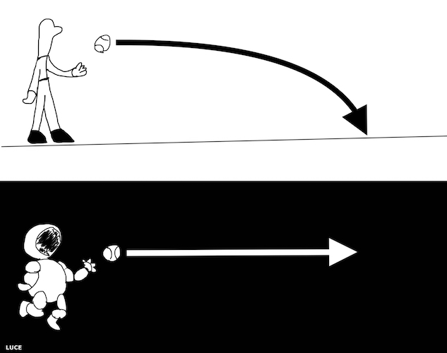
But what is a straight line anyway? In the flat two dimensional geometry we learn in high school a straight line is exactly what you think it is. It is the line made by the edge of a ruler and the shortest distance between two points. In the geometry of the flat plane a straight line is a geodesic.
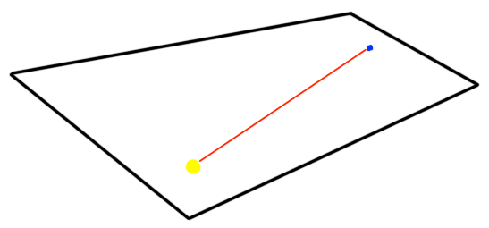There are of course other geometries besides the planar one we learn in high school. A geometry that is not on the plane but that most of us are familiar with is that of the sphere. What does a straight line look like between two points on a sphere? The sphere is curved all over so we can't put our 2 dimensional straight line on it without bending it. To create a straight line on the sphere we could imagine an ant crawling on a globe. A smooth globe that doesn't recreate the bumpiness of the real Earth. Say the ant wants to crawl from New York to Moscow. How could the ant take the shortest route possible? If the ant was careful to minimize its distance at each step it took toward Moscow then the path it traced out would be the shortest route there. We could define such a route as a "straight line" on the sphere. The shortest distance between two points.
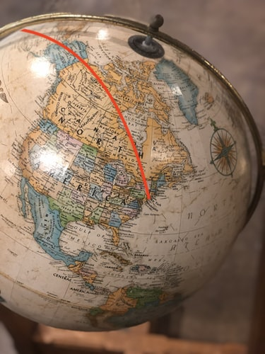In some sense a geodesic is a generalization of the concept of a straight line. Though it is of note that not all geodesics form a path that is the shortest route between two points. If, for example, our surface was that of a cylinder the geodesic between two points on the curved face of a cylinder could be a helix, but the shortest distance is a flat straight line. The geodesic minimizes the distance traveled locally on a surface which may or may not be the shortest distance globally.
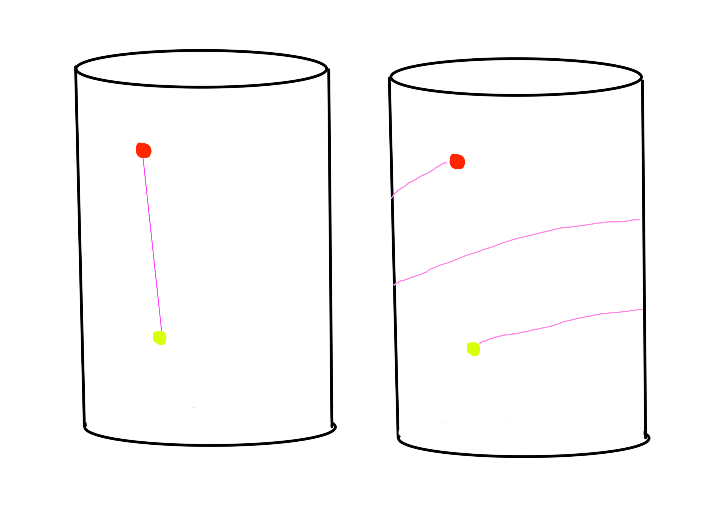How does do these two concepts illustrate what gravity is? Einstein's theory of relativity describes what we think of as time and space as one thing. Often and aptly described as a fabric. This fabric has its own geometry, its own geodesics. Let's go back to the tennis ball. The theory of relativity describes mass as curving the geometry of space-time. For simplicity let's pretend our space-time was a two dimensional geometry instead of the four dimensional it really is. Unwarped by mass a tennis ball travels through space-time forever in what we typically think of as a straight line.
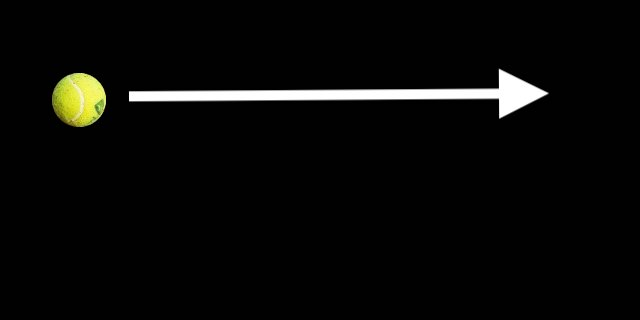
Now add a mass large enough to noticeably curve the space near the tennis ball. The tennis ball still travels in a straight line, it follows a geodesic in this geometry. It is just not the straight line we are used to.
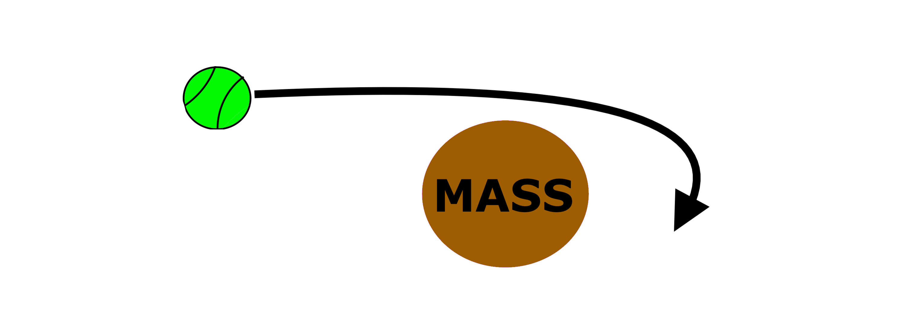 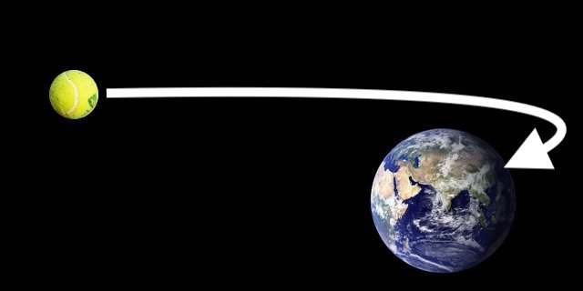
Make the mass large enough and you see that the geodesic has the tennis ball going into the massive object. This is what is happening to us at every moment. Our body moves along in a straight line but the Earth is there to push against us. The push back we receive as our feet push down on the Earth is what we feel as weight. Without this push back we would feel weightless. The feeling experienced by astronauts in space or anyone in free-fall.
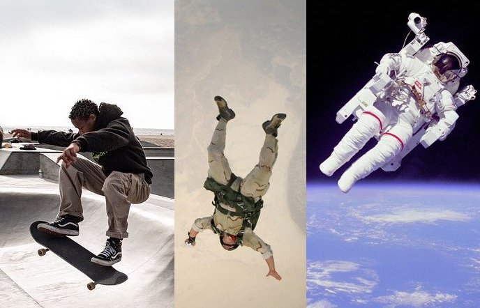 Three people in free-fall
Weightlessness is bad for you
Gravity is not to be overlooked when planning to leave planet Earth. All life on Earth has evolved under the force of Earth's gravity, constantly experiencing a net acceleration of about 9.8 m/s2, also known as 1g, towards the center of Earth's mass. Gravity on Earth's surface is pretty much the same everywhere. There are slight differences in its strength, the differences aren't felt by humans. We move in the gravitational field like a coy fish in a shallow pond. The fish doesn't do well out of the water.
Given the range of gravitational forces that are out there in the universe, everything from the pervasive 0g of deep empty space to the black holes from which not even light can escape, what can be said about the ranges of effects of gravity on humans? We really only have two data points on the effects of gravity on the human body, 1g and 0g. 1g is where we live (for now) and 0g aboard the ISS. Actually the ISS is in low Earth orbit and experiences an acceleration of about 0.9g but the craft is constantly circling the Earth fast enough for the crew inside to experience weightlessness.
Billionaires want to start human colonies on Mars. What can we predict about the effects of Martian gravity on the human body when we only have two data points? We could attempt to draw a curve between the two points to try predicting what the effects would be. Again we run into a problem. The curves are probably not linear and probably very different for different systems in the body. We also have a problem with one of the data points itself. The crew of the ISS is exposed to about a years worth of surface radiation in a week aboard the station. Some of the effects of 0g may be difficult to untangle from the radiation, such as the deterioration of vision. Which is probably caused by a combination of fluid building up in the head and cosmic rays damaging the retina. It may also be the case that 0g is so radically different from even 0.1g or above that it can't tell us anything about the effects of Martian gravity on the human body.
What are the known effects of 0g? Many of them resemble senescence, the deterioration associated with aging. Bones lose density. Muscles atrophy. The cardiovascular system degrades. Our sense of balance is thrown off. There are the knock-on effects to worry about as well. Bone demineralization puts stress on our kidneys which in turn could cause higher blood pressure, and on and on the cascade of ill health goes.
In 0g fluids don't distribute normally. Astronauts get puffy faces and their eyes change shape. Redistributed cerebral fluids put unnatural pressures on the brain. It is not clear if this leads to the cognitive decline observed in some astronauts on their return to Earth. Being in space is demanding. Undoubtedly some of the deterioration experienced in space is from stress. If you want to prematurely age yourself get stressed! There may be catastrophic effects that we don't have any inkling of as well. It's possible that every cell in our body has some vague sense of gravity as an input for some of its behaviors. Tiny indiscernible changes add up over the long term. 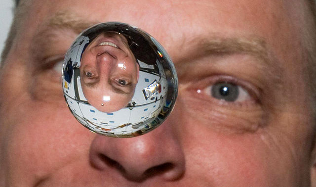 Water in free-fall with astronaut Clayton Anderson
The crew aboard the ISS is required to exercise daily to slow down the deterioration of their bones and muscles. Interestingly the bones and muscles that degrade the most are the lower body and postural muscles. Exactly the ones not being used aboard a space ship. To what extent can bone and muscle loss in space be blamed on 0g? Astronauts tend to eat less than they should in space. The reasons why aren't clear but this would definitely exacerbate bone and muscle loss. 0g might affect some senses that lead to a loss of appetite. A lack of calories and vitamins is no joke. Anorexics experience muscle and bone density losses without being in 0g. We may have to start force feeding the astronauts.
To simulate the effects of 0g NASA puts people on bed rest for extended periods of time. Monitoring the atrophy of a long bed rest gives insights into what happens to the body as parts of it aren't used. The participants of these studies lose muscle mass, bone density, and have cardiovascular deconditioning. While this data is useful, we can grasp how helpful certain types of exercises are, these studies do not offer the range of data needed to make accurate predictions about what will happen to the first generation of Martian settlers, let alone their descendants. It has been observed that chicken embryos don't develop normally when fertilized in 0g. We aren't able to predict all the biological disturbances from 0g. We need more data.
The bone density of men and women increases from birth until a peak near the age of 30. From there both sexes have a steady decline with women having a sharper dip after menopause starts. If humans lived on a planet where the gravity was 30% stronger would the decline in bone density happen at the same rate? Maybe. We would definitely develop stronger bones if we had grown up in this "heavy" environment. It's not unreasonable to expect losses in proportion to the strength of the gravity you're in. For people raised in these less than 1g environments what will not be similar are the peaks in average bone density. It's the use it or lose it principal at work.
Mars has a surface gravity of about 0.38g which means that if you weigh 180 pounds on Earth you'd weigh about 68 pounds on Mars. If magically teleported to Mars right now you could move your body across monkey bars easier than an orangutang swings through the trees. The downside is that your body will respond to this lack of weight. Let's say you lose 2% of your bone mass a year under Earth's gravity. If there is an inverse relationship from the strength of gravity to the rate of bone loss then living on Mars for a year may be like aging your bones by three years. At this time we simply don't have enough data. Instead of sending human colonists to Mars might we first set up a colony of mice? Ignoring the costs of getting mice to Mars and back, such a colony would tell us a lot about the effects of low g on mammals.
Animal experiments are inhuman. I don't want to send a bunch of mice into space to live out sterile, mean lives. Could we instead send a miniature ecosystem featuring all the phylums of Earth? This would be more humane and give deeper insight into the effects of gravity. I don't expect fish, amebas, and mammals to all experience low gravity in the same way.
The therapies that will need to be developed would probably help people back on Earth. If we found a drug to stop bone mineral loss in space there's no reason it couldn't help the elderly. When bones lose their density they break more easily. A combination of genetic engineering and drugs may negate the effects of low or no g. Until these therapies are well developed humans will need to exercise. Really we need to exercise no matter what. One of the few benefits of a low g environment is how cool some exercise becomes. If you can maintain the fitness you had on Earth you'd be a superman on another world. You could lift enormous weights, jump higher, throw a football 200 yards. You could even give yourself fake wings to fly if the gravity and air pressure are just right.
Augmented gravity
For a moment let's go back to Mars and our 180 pound human who would only be 68 pounds on Mars. Could this person just put on a suit that weighs 112 pounds on Mars to make up the difference? Possibly. On Earth such a suit would weigh 295 pounds. Depending on the way the mass is added to the suit it might even help with the extra radiation the Martian surface receives. Before humans try to settle in distant stars they will have to try it here in our own solar system. What heavenly bodies have a surface gravity closest to Earths?
| Heavenly Body | Surface gravity in g's |
|---|---|
| Mercury | 0.378 |
| Venus | 0.907 |
| Earth | 1 |
| Moon | 0.166 |
| Mars | 0.377 |
| Ceres | 0.029 |
| Jupiter | 2.36 |
| Io | 0.183 |
| Europa | 0.134 |
| Ganymede | 0.146 |
| Callisto | 0.126 |
| Saturn | 0.916 |
| Titan | 0.138 |
| Uranus | 0.889 |
| Neptune | 1.12 |
| Pluto | 0.071 |
The bodies with the gravity closest to Earth's are highlighted. Of these Venus is closest to us in distance so it may make sense to create a maned research station there. Venus is inhospitable in other ways of course. Its surface is hot enough to melt lead. The atmospheric pressure is 90 times greater than Earth's. But who said you have to land on the surface? A habitat filled with oxygen and nitrogen (what we breath) would be like a balloon. You could breath the same air that lifts you and still get the benefits of near Earth gravity.
Despite the stronger gravity of Venus people still have their hearts set on the Red Planet. So if people are dead set on getting to Mars what can we do to make it more like home? At the moment not much. A sure fire way to increase Martian gravity is to add mass to the planet. The available mass would come from the asteroid belt which is right next door to Mars. Carefully smashing meteors into Mars could be done in such a way as to add mass without affecting its orbit too much. The problem is that there simply isn't enough mass. Planets are MASSIVE relative to asteroids. Adding all the astroids in the belt wouldn't be enough to appreciably increase Martian gravity.
The surface gravity of Mars and Mercury are about the same despite the latter being smaller. This results from Mercury being denser than Mars but also having a smaller diameter. If we don't have mass to add to Mars could we make it smaller, densify it? Could we smoosh or melt it to make it as small as Mercury while keeping the same amount of mass? If we could the surface gravity would be 0.7g. Not too shabby. Continue compacting any mass like this and you'll eventually get a black hole.
Could we use a small black hole to create artificial gravity? Or really any kind of ultra-dense thing that a habitat could be build around? You'd want to have a gravitational acceleration that's near 1g. For anything that isn't a black hole the object in question would still be too large for us to manufacture. Using the densest elements we have you'd need to create a sphere a couple miles in diameter to create Earth-like gravity at its surface. Another approach in this same vein would be to layer ultra-dense material onto a planet. This is the same this as adding mass to it and again we run into the same problem: Where is the mass coming from?
For a black hole the project might be more feasible. Typically we think of black holes as these massive things made of collapsed stars. But they don't have to be massive. A black hole can be created at any size if enough mass is compressed into a small enough space. There are technical issues as to how to create a black hole and how to not get your space station absorbed by it. All that aside could you set a black hole at the center of a space station to use its gravity? I'm assuming you've found a way to "contain" it so it's not swallowing anything you don't want it to, it's not radiating too much, and it's not spinning. The structure around it would still be massive. The clearest illustration is to imagine the Earth being condensed down to a black hole. It would have a radius of 8.7 mm. If you wanted to build a shell around it so that you'd have near Earth-like gravity on the shell it would have to be almost as big as the Earth was!
How big would this black hole be if the shell was a reasonable size? Say we had a shell around it with the same diameter as a Ferris wheel (66 feet). Assuming you'd want 1g at your feet you'd run into the problem of a gravitational gradient. A six foot tall man would have 1g at his feet and 0.8g at his head. To avoid this you could make the gradient, the difference between head and feet, less steep but you'd need to make the shell larger. The exact thing we were trying to avoid.
Artificial gravity
The force of gravity can be mimicked with two methods, linear and centripetal acceleration. To understand how linear acceleration creates the illusion of gravity think about an elevator. When the elevator first starts to move upward you feel it. The acceleration only happens when the speed is changing. Once it continues moving at a constant speed the acceleration stops. If you were standing on a scale you'd notice that when the elevator accelerates your weight changes. When it accelerates upward your weight goes up and you experience more than 1g of force. When it accelerates downward you experience less than 1g. But it has to be accelerating to experience this force which is why you'll only feel it for a second. If the elevator is moving at a constant speed it will have no effect.
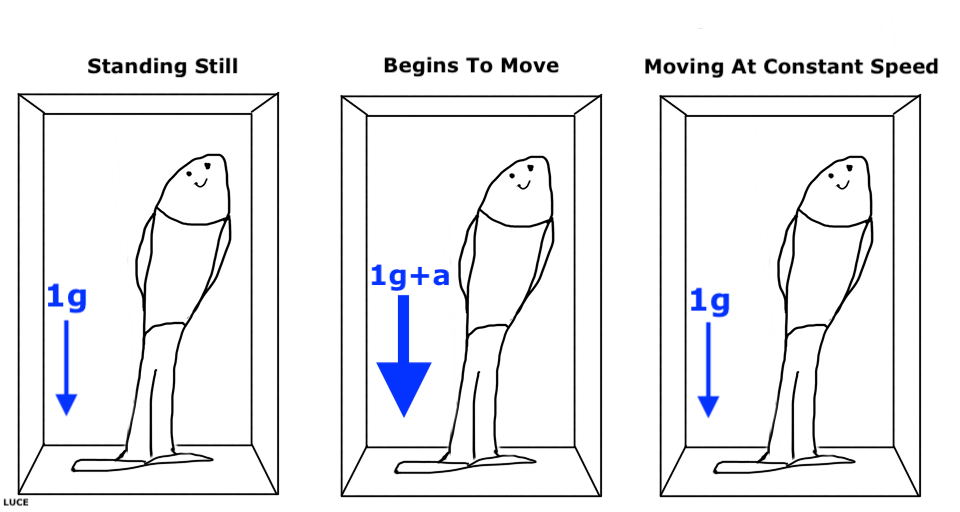 The elevator's acceleration a is part of the total acceleration the person inside the elevator experiences.
If you wanted to have something in space that accelerates to reproduce Earth's gravity you'd have to continuously accelerate at 9.8 m/s2. Do that for 353 days straight and you'd reach the speed of light. Not possible unless you have an infinite amount of energy. Even if we couldn't accelerate at 1g for that long being about to do it for 2 days straight would be useful. You could reach Mars in two days without losing the feeling of gravity. Or you could throttle the acceleration to get acclimated to Martian gravity on your way there.
Alpha Centauri is a trinary star system that's 4.4 light years away. If a ship could constantly accelerate a ship at 9.8 m/s2 to 99% the speed of light (and decelerate it as it nears the star system in the exact opposite way) the ship could get there in 5.4 years. The astronauts would experience 1g while accelerating, they'd drift along at 99% the speed of light for 1266 days , and again experience 1g as they slow down on approach. For those 1266 days they'd experience 0g. No gravity, but thanks to the magic of relativity for the crew inside the space ship only 607 days would pass! Sadly we don't currently have any technology that could continuously accelerate at 9.8 m/s2 for very long.
Without any feasible system to create artificial gravity by linear acceleration you're left with centripetal acceleration. If you've ever tied a rope to a rock and swung it around in a circle while trying to keep your hand in place you'll have noticed that the string pulls on your hand.
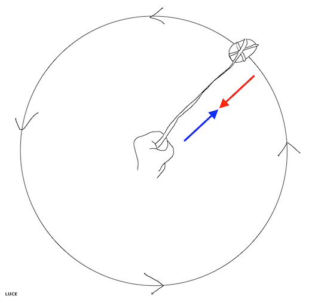
The force that pulls on your hand is also experienced by the rock but in the opposite direction. To increase the force that pulls your hand toward the rock and the rock toward your hand you could swing the rock faster or make the rope longer. It isn't just rocks tied to ropes that experience this force. Next time you're doing laundry watch the last cycle of the washing machine as it spins its drum super fast to wring out the clothes. All the clothes get pushed against the wall of the drum inside the washing machine. They are experiencing a centrifugal force that pushes them to the wall.
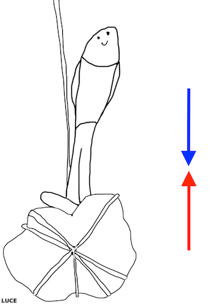If a little man was standing on the rock that was being spun he would feel the rock pushing up against his feet. This would simulate standing in a gravitational field. From his point of view he's being pushed down into the rock. The rides at the carnival or peer that spin really fast to pin people against the wall use centripetal acceleration to do it. These rides remind me of the flying saucers from 1950's scifi movies, which always seem to be spinning. Perhaps the saucers spin to create artificial gravity for their alien crew?
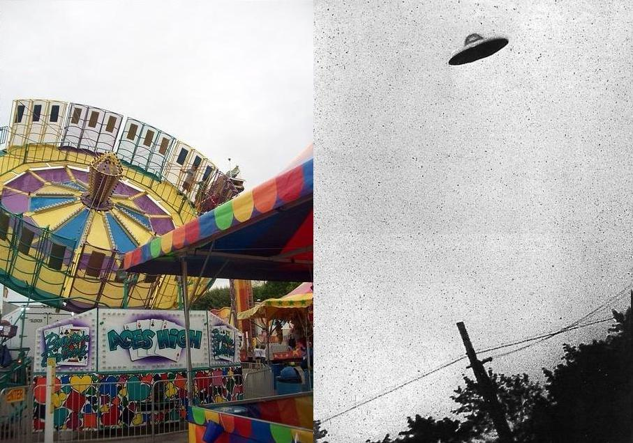 Do aliens use centrifugal force in their flying saucers?
Few who have thought about living in space don't arrive at centrifugal force as the way to create artificial gravity. The idea goes back to Tsiolkovsky who suggested it in 1903 but didn't really work out the details. A comprehensive study on space colonization organized by NASA in 1975 came up with the Stanford Torus. A massive spinning torus designed to house 10,000 people. Completing one rotation every minute with a diameter just over a mile it could produce an artificial gravity near 1g.
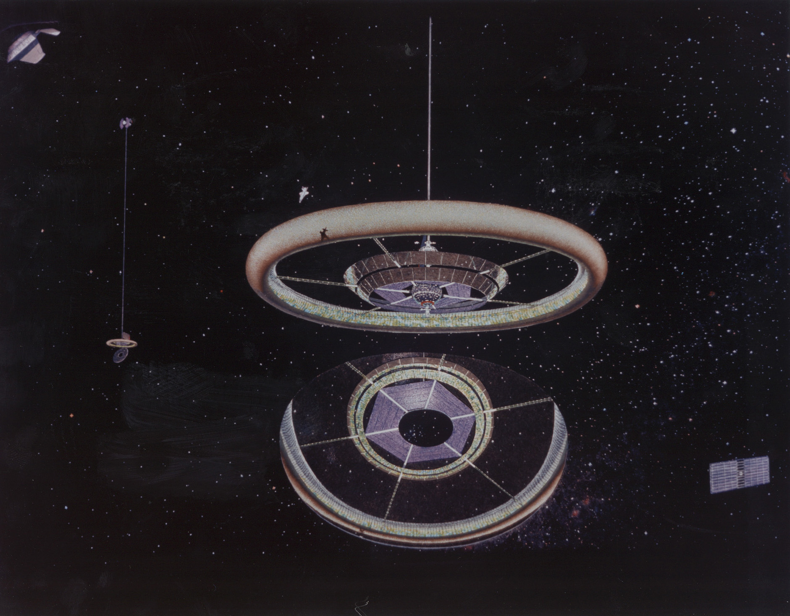 Stanford Torus and mirror Interior
Interior
Why so massive? The larger the radius of the rotating habitat the less strange the artificial gravity inside will appear. The formula to calculate the acceleration experienced by someone on the interior of a rotating habitat is a = r · w2, where w is the angular velocity and r is the radius. This simple formula tells us a lot. We want a to be fixed at 1g. So the two parameters we can manipulate are r and w. It is tempting to want to have a small r, a ship of smaller radius is easier to build. There are two problems with using a small r though. The first is that the gradient of acceleration will be steeper. On Earth the strength of gravity is different from our heads to our feet. The difference is so small as to be unnoticeable. For a small radius spinning space station the difference in gravity between our heads and feet would be jarring. Imagine putting groceries away in the cabinet and findng that the items gain weight as you lift them.
The other issue with a smaller r is that you'll need to spin the habitat faster. The spin will screw with the fluids in your ear that control balance. Humans can adapt to spins of 10 rotations per minute but it is not comfortable. Two rotations per minute or slower would be best, the slower the better. With a slower rotation there are more familiar physics. In a spinning habitat if you were to throw a ball in the direction of spin the ball would appear to fall faster. If you threw it in the direction opposite of the spin it would appear to fall slower. Standing still on the station's floor you don't feel like you're moving. The spinning station would bring you to the ball or move you away from it. From your perspective the ball is falling faster or slower.
If the station is spinning slowly enough to be comfortable a person could still notice something called the Coriolis effect. If they threw a ball in the direction of the center of rotation they'd notice that the ball followed a path that curved sideways. We experience this here on Earth already. The effect is slight because the Earth spins slowly relative to our motions. The ball goes in a straight line but the person viewing it from inside the station sees it differently. They don't feel the ship moving them so the spinning appears as a curved path for the ball. This Coriolis effect is lessened too when the station spins slower.
Using centrifugal force or linear acceleration wouldn't make sense on a planet's surface. Building gigantic rotating habitats in space is not impossible but it is costly. Engineering structures that can withstand the stress is not out of humanity's reach. These gigantic stations could be built in space. The obstacle is the cost of launching the materials. An obstacle that may be overcome if we source the materials from the moon or other bodies with low gravity. Lower gravity means lower energy used to launch materials off of it which means cheaper launch costs relative to Earth.
When considering living off world think about your gravity. Getting more on a planet doesn't seem feasible. There are definitely worlds beyond our solar system with Earth-like gravity. If we find it impossible to ever visit them we'll be stuck with centrifugal gravity. It would not surprise me if at some point in the deep future there were more humans in rotating space stations than on planets.